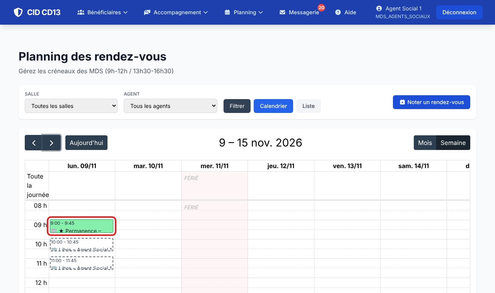
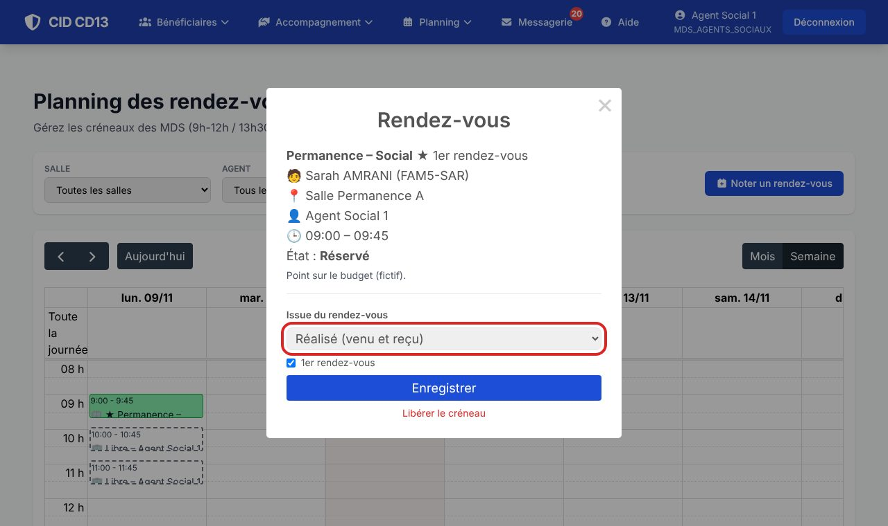
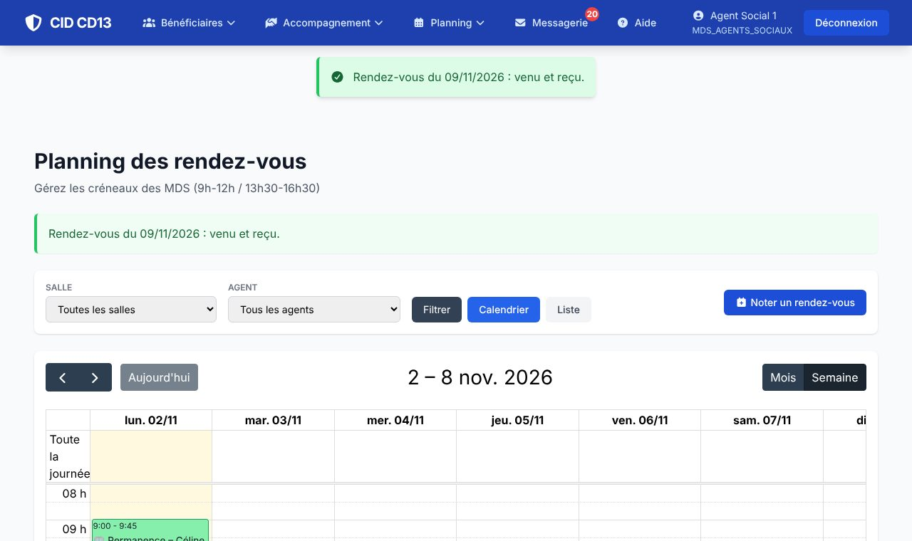

1Ouvrir le rendez-vous

- Ouvrez le Calendrier (flèches pour changer de semaine) et cliquez sur le rendez-vous.
2Choisir l'issue


- Choisissez l'issue : réalisé, usager absent, venu non reçu, annulé ou reporté (par l'usager ou la MDS), VAD usager absent…
- Cochez 1er rendez-vous si besoin, puis Enregistrer.
- Libérer le créneau rend une permanence réservée de nouveau disponible.
Bon à savoir
- Seuls l'agent du rendez-vous et le cadre peuvent en noter l'issue.
Cliquez sur une image pour l'agrandir. Le cadre rouge montre où cliquer ou quoi remplir. Toutes les données affichées sont fictives.